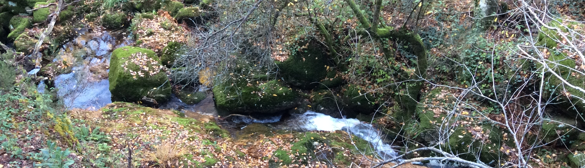

Natural Wonders of the World
Natural Wonders of the World

Welcome
Our objective is to share our unique travel experiences as we discover natural wonders through our travels. Natural Wonders of the World is a non-profit organization that provides free information to nature lovers and potential travellers. We believe that spending time with nature contributes to the well-being and happiness of human beings. We are committed to promoting appreciation for and conservation of natural environments. Connect with us for updates as we discover wonders of nature and their connections with stories, traditions and lifestyles.